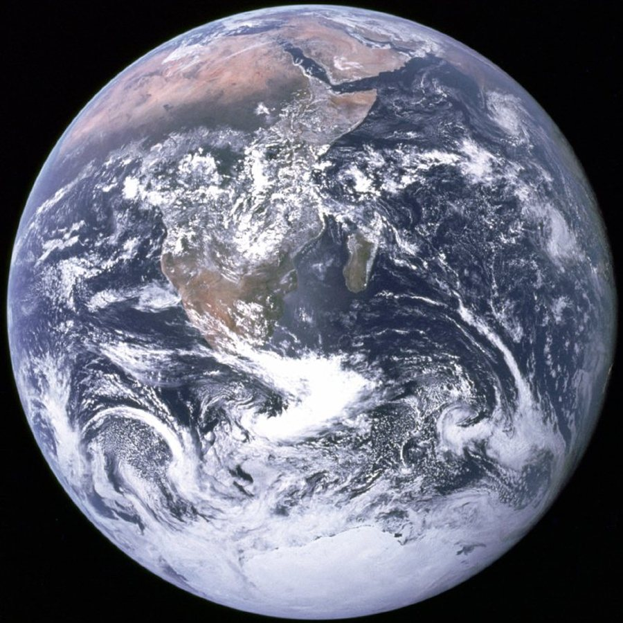
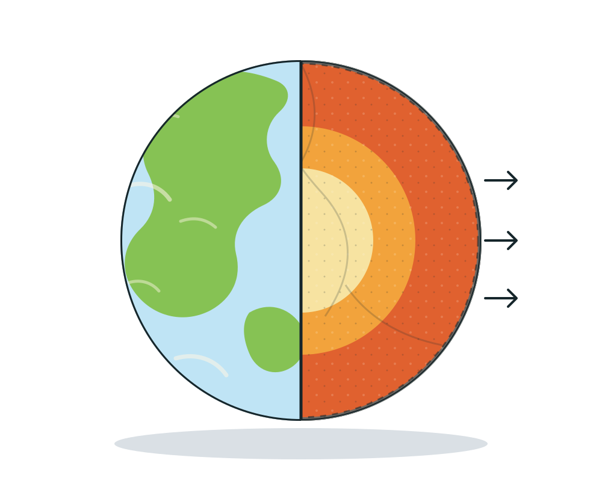
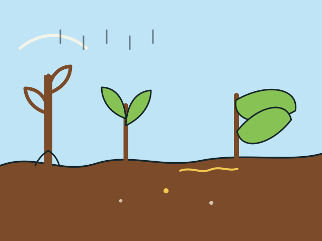
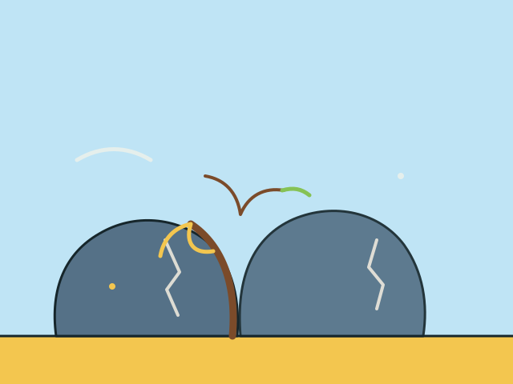

Kenapa gua bisa sedalam dua kilometer?
Gua terdalam di dunia turun lebih dari 2 km. Pembentuknya bukan gempa, melainkan air yang bekerja sangat lama.
Tim Bumi BawahBaca

Perjalanan ke bawah permukaan
Kita berdiri di atas enam lapisan yang saling menopang: dari daun yang baru jatuh sampai batas kerak 35 kilometer. Gulir untuk mulai turun.
Gulir untuk turun · tarik bumi untuk memutar
0 m
Skala di halaman ini tidak linear. Sepuluh sentimeter pertama memuat lebih banyak kehidupan daripada seratus meter di bawahnya, jadi lapisan tipis sengaja diberi ruang lebih panjang. Angka kedalaman tetap memakai ukuran sebenarnya.
0–10 cm · 15–25 °C
Daun, ranting, dan sisa makhluk yang belum selesai diuraikan. Di sinilah tanah mulai terbentuk.
Suhu rata-rata 15–25 °C
Susunan rata-rata
Sumber: USDA NRCS — Soil health
Isi lapisan ini
Pilih satu benda untuk melihat ukuran, peran, dan sumbernya. Semua tombol bisa dipakai dengan papan ketik.
10–30 cm · 14–24 °C
Bagian yang paling sering diinjak dan paling sering dianggap kotor. Padahal ini dapur utama tanaman.
Suhu rata-rata 14–24 °C
Susunan rata-rata
Sumber: USDA NRCS — Soil texture
Isi lapisan ini
Pilih satu benda untuk melihat ukuran, peran, dan sumbernya. Semua tombol bisa dipakai dengan papan ketik.
30 cm – 1,5 m · 12–22 °C
Lebih dingin, lebih padat, dan lebih sunyi. Air bergerak pelan membawa mineral ke bawah, atau polutan ikut serta.
Suhu rata-rata 12–22 °C
Susunan rata-rata
Isi lapisan ini
Pilih satu benda untuk melihat ukuran, peran, dan sumbernya. Semua tombol bisa dipakai dengan papan ketik.
1,5–30 m · 10–20 °C
Batuan yang sudah lelah. Retak dan rongganya menyimpan air, akar, dan kadang gua sepanjang berkilo-kilometer.
Suhu rata-rata 10–20 °C
Susunan rata-rata
Sumber: USGS Water Science School — Aquifers and groundwater
Isi lapisan ini
Pilih satu benda untuk melihat ukuran, peran, dan sumbernya. Semua tombol bisa dipakai dengan papan ketik.
30–500 m · 15–30 °C
Fondasi keras di bawah semua yang kita tanam. Di retakannya, air bisa bertahan jutaan tahun.
Suhu rata-rata 15–30 °C
Susunan rata-rata
Isi lapisan ini
Pilih satu benda untuk melihat ukuran, peran, dan sumbernya. Semua tombol bisa dipakai dengan papan ketik.
500 m – 35 km · 30–700 °C (bervariasi)
Dari 500 meter sampai sekitar 35 kilometer: batuan, air purba, mikroba, dan panas. Manusia baru menggores sedikit.
Suhu rata-rata 30–700 °C (bervariasi)
Susunan rata-rata
Isi lapisan ini
Pilih satu benda untuk melihat ukuran, peran, dan sumbernya. Semua tombol bisa dipakai dengan papan ketik.
35 km
Batas Moho menandai peralihan dari kerak ke mantel. Di bawahnya masih ada 2.900 km batuan panas, inti luar yang cair, dan inti dalam yang padat. Semua yang kita gali, bor, dan bangun hanya menyentuh bagian paling luar.
Kedalaman dan suhu diambil dari sumber yang dicantumkan pada tiap penanda. Warna lapisan adalah penyederhanaan untuk membaca, bukan contoh batuan yang bisa dipakai di lapangan.
Skala bumi
Kerak, mantel, inti luar, dan inti dalam. Perhatikan bahwa kerak di gambar ini dipertebal agar terlihat; pada bola bumi ia lebih tipis dari kulit apel.
Warna inti adalah perkiraan visual. Suhu inti dalam sekitar 5.400 °C, setara permukaan Matahari.

Ilustrasi dan model: Bumi Bawah (CC0). Foto permukaan: NASA.
Dari arsip
Gua terdalam di dunia turun lebih dari 2 km. Pembentuknya bukan gempa, melainkan air yang bekerja sangat lama.
Tim Bumi BawahBaca
Kola Superdeep Borehole adalah lubang vertikal terdalam buatan manusia. Ia tidak mencapai mantel, tetapi mengubah banyak hal yang kita kira tentang kerak bumi.
Tim Bumi BawahBaca
Kerak bumi adalah lapisan tipis tempat semua kehidupan berlangsung. Batasnya dengan mantel bernama Moho, dan belum ada bor yang menembusnya.
Tim Bumi BawahBaca
Galeri



Empat angka
Semua angka di bawah punya sumber. Beberapa di antaranya sangat sulit diperiksa ulang, jadi kami cantumkan catatan verifikasinya di halaman tentang.
12 km
Lubang vertikal terdalam buatan manusia. Panas dan batuan retak menghentikannya.
AAPG Explorer — The deepest and longest wells3,9 km
Tambang emas terdalam di dunia, dengan batuan kerja di bawah 3,8 km.
Harmony Gold — Mponeng Mine2,2 km
Gua terdalam yang diketahui, di Abkhazia. Kedalaman resminya masih diperbarui antar ekspedisi.
Guinness World Records — Deepest cave35 km
Batas kerak dan mantel. Di bawah benua, rata-ratanya sekitar 35 km.
Geology.com — Mohorovičić discontinuityBantu kami menjaga akurasi